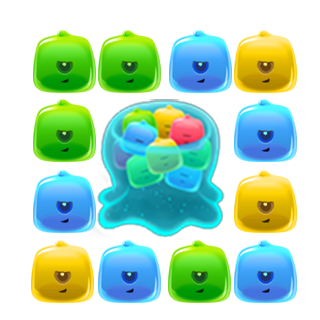
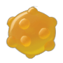
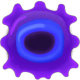
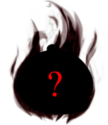

這是我所參與的一款休閒類打磚塊手遊
適合有空閒或利用片段的時間無聊滑一下的小遊戲
Link (已下架)
Android : https://play.google.com/store/apps/details?id=com.Forgame.JelloSmash
iOS : https://itunes.apple.com/us/app/jellosmash/id847967293?l=zh&ls=1&mt=8
主要的遊戲核心是體驗打爆果凍的爽快感!!!!
主角是兩位要去解救公主的蘑菇兄弟
遊戲中有許多種不同的怪物果凍
普通果凍、分裂果凍、再生果凍、加速果凍、黑洞果凍、炸彈果凍
普通果凍：打死就爆掉沒什麼特別
分裂果凍：打死後會分裂出小果凍 ( 眼睛越多分裂越多 )



炸彈果凍：爆炸後會把周圍的果凍都炸掉
介紹完簡單的果凍後
當然還有每個遊戲都會出現的魔王
